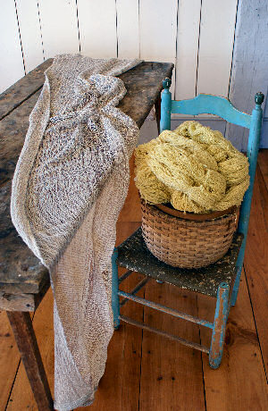

Block 1

Weaving Studio and Shop
Block 2

Weaving background
In the late 1970’s I was a young mother living on an
island north of Seattle in Washington State and my
husband, Andy, was away King crab fishing in Alaska
for months at a time. The long stretches of time and
solitude allowed me to really focus on my weaving.
While keeping on eye on our young chillren I read
books about weaving and practiced on my loom.
Through trial and error was able to develop my abilities.
After moving back East my husband worked as a full time
blacksmith and we traveled together to craft shows featuring
early Americana. My work centered on textiles with early
American inspired patterns. It was a rich time in our lives
meeting other craftspeople and exchanging wares and
stories with each other. We were featured in the magazines
"Colonial Homes","Country Living" and "Country Home".
The early patterns are the foundation of my knowledge
and techniques. I still love weaving the classics and now
have branched out with my own personal style.
The colors of my work reflect the beautiful Maine coast
where I gather local plants for hand dying from
fields and gardens.
Block 3

Our family is a creative one.
Andy operates [Scottish Wrought Iron], our son
[Zack] (www.zackaryaleck.com) practices the blacksmith art
in Alaska
and our daughter Annie established the
[Barn Door Baking Company] (www.barndoorbakingcompany.com)
in Damariscotta, Maine.